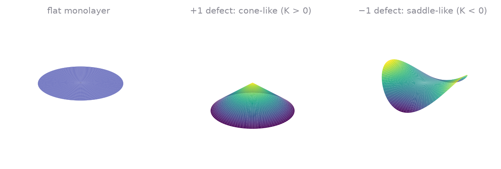
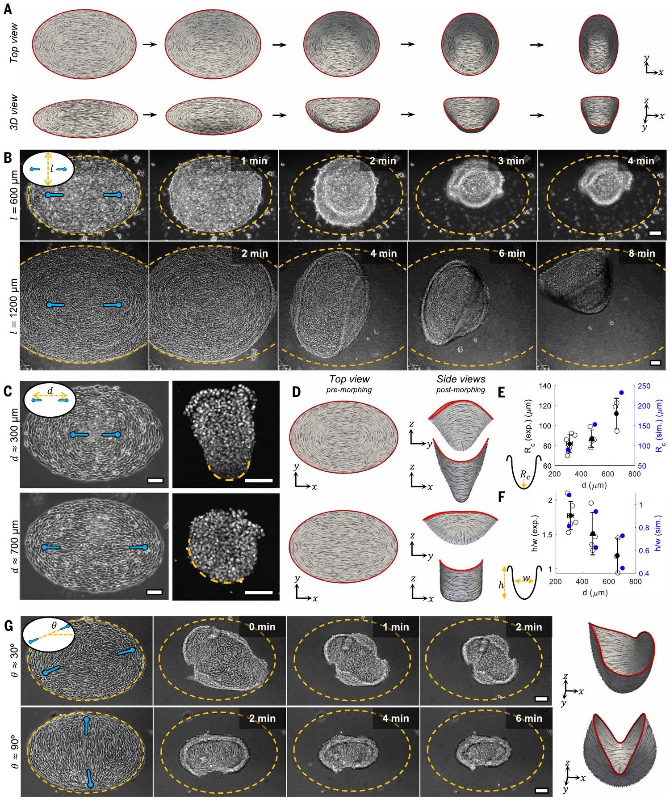

Biomechanics · Theorem
Proof of a universal behavior
in cell biology.
Cells at the free edge of a monolayer polarize tangentially to the edge. I proved this mathematically, as far as I know the only proof to date, and it holds regardless of cell type, animal, or even for bacteria.
At a glance
- Problem
- Why the polarization of cells at the free edge of a monolayer is tangential to the edge, for any cell type.
- Method
- A monolayer modeled as a Cosserat surface with a unit director; constrained first variation with Lagrange multipliers.
- Physics & math
- The condition d·νt = 0 follows from the boundary conditions with no constitutive law; Legendre–Hadamard inequalities for the problem mark where defects and patterns form.
- Result
- A theorem valid for any cell type, any animal, even bacteria; to my knowledge the only mathematical proof of this behavior. Accepted in Proceedings of the Royal Society A.
The result
Experiments on confluent cell monolayers show an edge effect: at a free boundary, the polarization of cells aligns with the boundary and not across it. This is seen for many cell types, and the effect is so consistent that it begs a mathematical explanation. I show that it is a theorem of the mechanics of a polarized monolayer: if the polarization is a unit vector lying in the plane of the tissue and no double force acts on the free edge, then
where \( \boldsymbol{d} \) is the polarization director and \( \boldsymbol{\nu}_t \) is the in-plane normal to the boundary in the current configuration. No constitutive law enters the argument, so the conclusion cannot depend on which cell type, animal, or microorganism the monolayer is made of. To my knowledge, this is the only mathematical proof of this behavior.
What you can see in experiments
Two videos illustrate the behavior. Even though they are not about edge effects, you can see that at the boundaries the cells remain tangential.
Cell monolayer video ↗: look at the cells along the border of the sheet.
The same can be seen for bacteria in this video: bacteria video ↗. At the boundaries the cells again remain tangential, which is consistent with the behavior being universal and independent of the biology of the individual unit.
Model
The monolayer is a two-dimensional directed surface (a Cosserat surface) in three-dimensional space. Its motion is \( \boldsymbol{x}=\boldsymbol{r}(\boldsymbol{X}) \), and each point carries a director \( \boldsymbol{d} \) that encodes cell polarization. Two constraints define the problem: the polarization is a unit vector and it is tangent to the tissue, with \( \boldsymbol{n} \) the normal to the deformed surface,
The elastic energy per unit reference area depends on the surface gradients of the two fields,
Invariance of \( U \) under rigid rotations gives a restriction on the stresses that holds for every admissible energy,
Proof of the edge effect
The two constraints are enforced with Lagrange multipliers, \( \lambda,\alpha \) for the unit length and \( \Lambda,\beta \) for tangency, in the bulk and on the boundary. Setting the first variation of the augmented energy equal to the virtual power of the external loads gives the balance laws
with \( \boldsymbol{P}=\partial U/\partial\nabla\boldsymbol{r} \) and \( \boldsymbol{M}=\partial U/\partial\nabla\boldsymbol{d} \). The tangency multiplier \( \beta \) on the boundary is conjugate to the normal derivative of the virtual displacement, so it can only be balanced by a double force \( p_\nu \) applied to the edge:
On a free edge no double force acts, \( p_\nu=0 \), and a non-trivial multiplier \( \beta \) then forces
The in-plane normals in the reference and current configurations are related by \( (\nu_t)_\alpha=(J/\lambda)\,\nu_\alpha \), where \( J \) is the area stretch and \( \lambda \) the stretch of the boundary. Since \( \boldsymbol{d}\cdot\boldsymbol{\nu}_t=d^\alpha(\nu_t)_\alpha \), this gives the edge effect,
Two remarks matter. First, the derivation never uses a specific form of \( U \): the result comes from the constraint \( \boldsymbol{d}\cdot\boldsymbol{n}=0 \) alone, which is why it is universal. Second, it is valid under the stated assumptions (planar unit polarization, no double forces, no electric field or chemoattractant). If a substrate or fiber network applies double forces to the edge, the conclusion changes, which gives an experimental test of the theory.
Stability: Legendre–Hadamard inequalities
A solution of the balance laws is an energy minimizer only if the second variation of the total potential energy is non-negative. Using localized oscillatory variations that respect both constraints, I obtained the Legendre–Hadamard inequality
where \( \mathscr{L}=\partial^2U/\partial(\nabla\boldsymbol{d})^2 \), \( \boldsymbol{G} \) is any referential tangent vector, and \( \boldsymbol{a},\boldsymbol{l} \) are arbitrary vectors with \( \boldsymbol{l}\cdot\boldsymbol{n}=0 \). Choosing \( \boldsymbol{a}=\boldsymbol{l} \) and \( \boldsymbol{a}=\boldsymbol{n} \) gives the necessary conditions
Loss of ellipticity and bifurcation
When the director gradient \( \nabla\boldsymbol{d} \) suffers a finite jump across a surface while \( \boldsymbol{d} \) stays continuous, the Legendre–Hadamard expression above becomes an equality: ellipticity is lost. This is the mathematical signature of pattern formation: the solution of the balance laws can switch between competing patterns. In a polarized monolayer it is the route by which defects and patterns appear. The two prototypical patterns are shown below.
Shape programming: the Science paper
Guillamat, Mirza, Bal, Gómez-González, Roca-Cusachs, Arroyo and Trepat recently showed that tissue shape can be programmed through the nematic organization of cellular forces[2]. By micropatterning fibroblast monolayers they place topological defects at chosen positions, which fixes the stress field. When the tissue is detached from its substrate, it contracts in-plane and then buckles out of plane into a reproducible three-dimensional shape. The authors call this Gaussian morphing: a frustrated pattern of in-plane tension cannot relax by in-plane deformation alone, so the sheet moves into the third dimension and its Gaussian curvature changes from zero to non-zero.
The shape that appears is the outcome of a bifurcation problem: the flat configuration stops being the stable solution, and the sheet selects a curved branch. The theory above says where this can happen. Loss of ellipticity is the key: it marks the states where the director field and the deformation can no longer be continued smoothly, which is exactly where defects form and where shape selection takes place. The edge effect, in turn, fixes the boundary condition on that problem: the polarization has to run along the free edge.

The figure below is taken from reference [2] and is reproduced here for explanation, with credit to its authors.

What it shows. The sheet first contracts along the axis joining the two +1/2 defects, then buckles into a bowl: this is the bifurcation. Experiment and simulation agree, and the shape is tunable through the defect distance and angle. Note the director in panel A: along the red outer boundary it runs parallel to the edge, consistent with the edge effect proved above.
Movies. The paper has 30 supplementary movies on the publisher page: science.org/doi/10.1126/science.adz9174 ↗. The ones most relevant here are the simulation of the two-defect bowl (Movie S8), the experiment (Movie S9) and the four- and six-defect shapes (Movies S23–S26). The raw images are in the replication data ↗.
My accepted paper
The proof above is my work with J. D. Humphrey, accepted in Proceedings of the Royal Society A [1] for the special issue in honor of Professor K. R. Rajagopal ↗, and is dedicated to his memory and his passion for developing novel approaches to the nonlinear behavior of materials, including soft tissues.
References
[1] M. Shirani & J. D. Humphrey, A universal behavior in polarized cell monolayers, Proceedings of the Royal Society A (2026, accepted).
[2] P. Guillamat, W. Mirza, P. K. Bal, M. Gómez-González, P. Roca-Cusachs, M. Arroyo, X. Trepat, Guidance of cellular nematic elastomers into shape-programmable living surfaces, Science 392, 317–323 (2026). doi:10.1126/science.adz9174 ↗